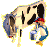
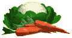

|
Ici, c'est la ferme d'Alex, ton nouvel ami, impatient de t'entraîner
dans ses aventures au cœur de la ferme !
La
ferme d'Alex ne manquera pas de t'étonner, mais avant d'explorer
cet univers merveilleux, tu dois construire
tous les bâtiments. Tu plongeras alors dans un immense
terrain de jeu et de découvertes !
 Dans
la
maison ou dans l'étable,
la ferme te réserve plein de surprises
rigolotes si tu es capable de les dénicher ! Dans
la
maison ou dans l'étable,
la ferme te réserve plein de surprises
rigolotes si tu es capable de les dénicher !
| On
y rencontre également des personnages aussi insolites que sympathiques : de grand-père
qui t'apprendra à traire
les vaches à l'épouvantail
qui a besoin de toi pour chasser les oiseaux, et bien d'autres encore : la ferme est pleine de rencontres passionnantes ! |

|
|  |
La
vie à la ferme n'est pas de tout repos ! Chaque membre de ta famille
est bien occupé : aide-les un peu et ils te récompenseront certainement.
Mamie
a besoin de légumes pour préparer une bonne soupe ? |
| Demande
à papa : il te laissera sans doute conduire
le tracteur ! Et c'est parti pour le travail de la terre : labourer, semer… Mais tu peux aussi démolir les bâtiments pour
les reconstruire ensuite ! |
 |
Mais
à la ferme, il n'y a pas que le travail ! Plein de jeux t'attendent :
pêche
les poissons dans la mare, rattrape
les poules échappées du poulailler, chasse
les corbeaux avec l'épouvantail dans un labyrinthe de blé !…
Après
toutes ces activités, tu dois connaître parfaitement le monde de la
ferme ! Tu as donc bien mérité ton diplôme
du parfait petit fermier !
|